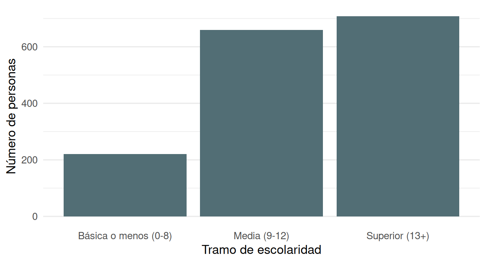
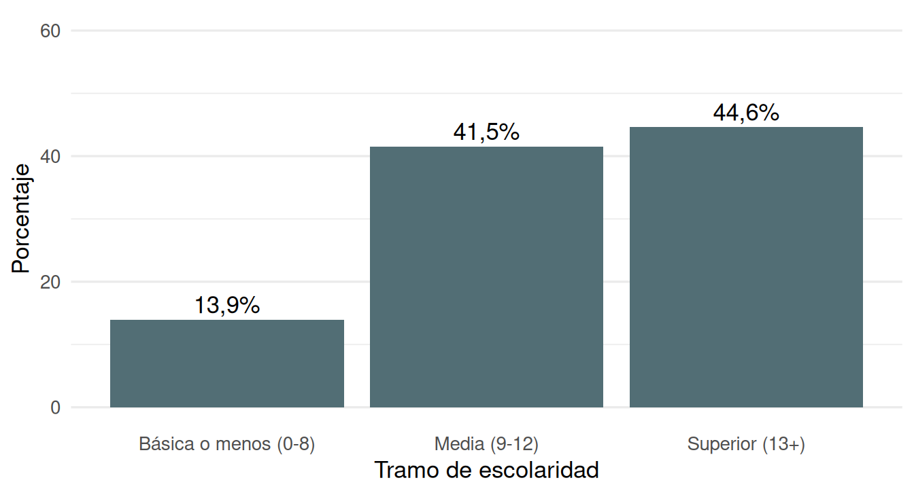
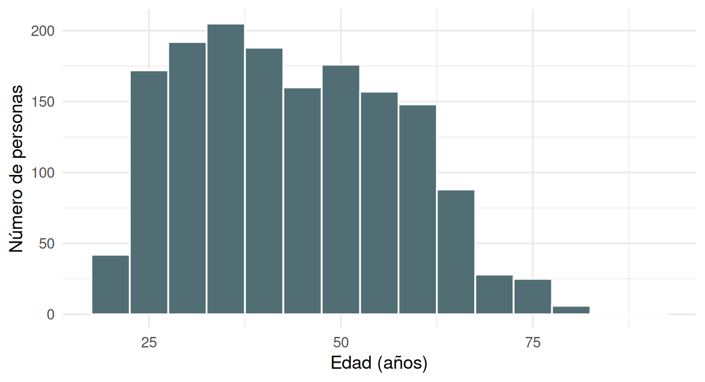
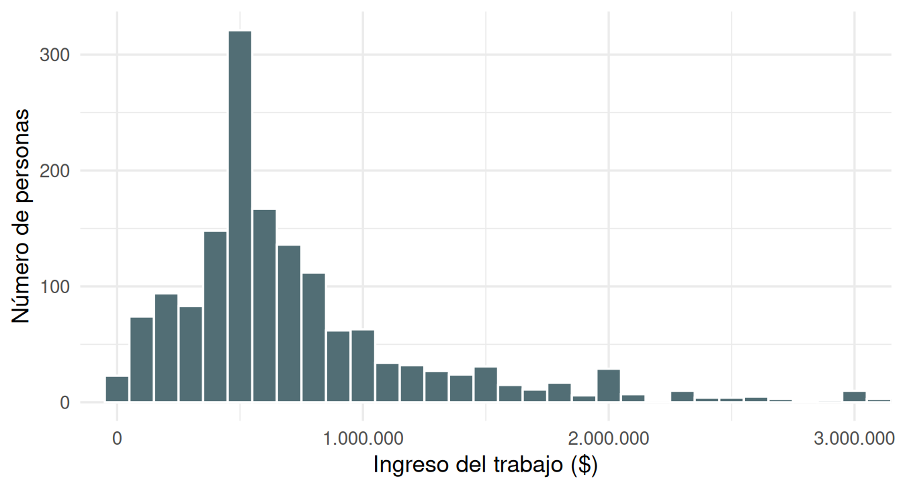
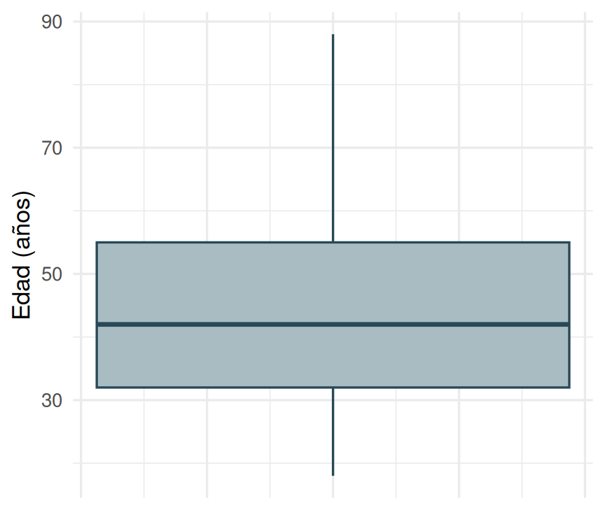
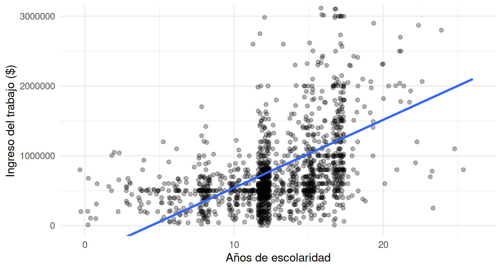
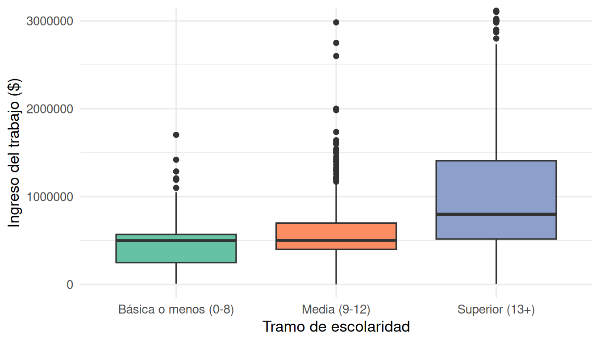
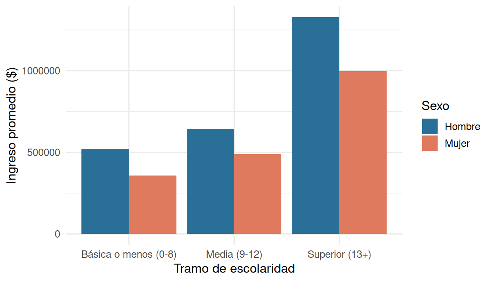
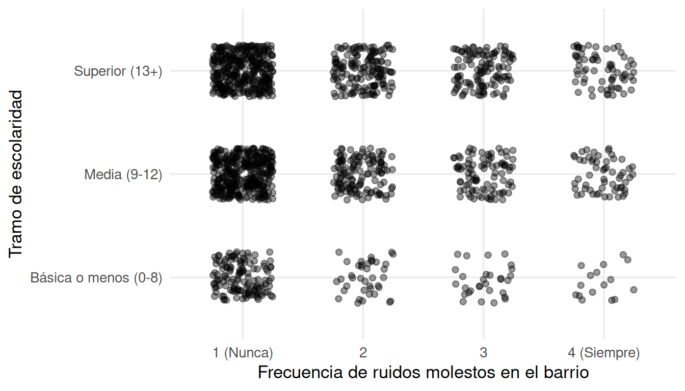

pacman::p_load(ggplot2, dplyr, knitr)Tablas y figuras en Quarto
Sesión del lunes, 9 de noviembre de 2026
Introducción
En la sesión anterior aprendimos que un documento Quarto integra texto y código. Ahora nos preguntamos cómo presentar los resultados: ¿qué tabla o gráfico es adecuado según el tipo de variable? Aprenderemos a construir, en R, las tablas y figuras más simples y a incorporarlas al informe con leyenda y numeración automática.
Para ello, en esta sesión veremos 4 puntos principales:
Tablas
Gráficos de una variable
Gráficos de dos variables
Referencias y guardado de figuras
Pregunta guía de la sesión
¿Cómo describimos una variable y cómo mostramos la relación entre dos variables en un informe Quarto?
Trabajaremos con la submuestra de la CASEN 2024 usada en la sesión anterior. Usaremos principalmente ggplot2 para gráficos y knitr (kable()) para tablas.
Cargamos la base de datos
options(scipen = 999) # desactiva la notación científica
url_datos <- paste0("https://raw.githubusercontent.com/",
"cursos-metodos-facso/datos-ejemplos/main/casen_barrio2024.rdata")
load(url(url_datos))La base recibe un breve procesamiento para crear las variables que se describen a continuación.
datos_casen <- datos_casen |>
mutate(
sexo = factor(mujer, levels = c(0, 1), labels = c("Hombre", "Mujer")),
ruidos = factor(barrio_ruidos, levels = 1:4,
labels = c("1 (Nunca)", "2", "3", "4 (Siempre)")),
tramo_esc = cut(escolaridad, breaks = c(-Inf, 8, 12, Inf),
labels = c("Básica o menos (0-8)", "Media (9-12)", "Superior (13+)"))
) |>
na.omit()| Variable | Tipo | Descripción |
|---|---|---|
sexo |
Categórica | Hombre / Mujer (creada desde mujer) |
tramo_esc |
Categórica ordinal | Tramo de escolaridad (creada desde escolaridad) |
ruidos |
Categórica ordinal | Frecuencia con que ha presenciado ruidos molestos en su barrio, de 1 (Nunca) a 4 (Siempre) (creada desde barrio_ruidos) |
escolaridad |
Numérica | Años de escolaridad |
edad |
Numérica | Edad en años |
ingreso_trabajo |
Numérica | Ingreso mensual del trabajo ($) |
Tablas
Tabla de frecuencias
Para describir una variable categórica, la primera herramienta es la tabla de frecuencias. Primero calculamos los datos con dplyr y luego los presentamos con kable().
# 1. Calcular: contar casos por tramo y obtener el porcentaje
tabla_esc <- datos_casen |>
count(tramo_esc) |>
mutate(porcentaje = round(100 * n / sum(n), 1))
# 2. Presentar: kable() da formato a la tabla
# (col.names cambia los nombres de las columnas)
kable(tabla_esc, col.names = c("Tramo de escolaridad", "n", "%"))| Tramo de escolaridad | n | % |
|---|---|---|
| Básica o menos (0-8) | 221 | 13.9 |
| Media (9-12) | 660 | 41.5 |
| Superior (13+) | 708 | 44.6 |
ImportanteIdea central
Se separan dos pasos: (1) calcular el resultado en un objeto y (2) presentarlo con kable(). Así el objeto puede reutilizarse en gráficos o en el texto.
Apoyo · Opciones útiles de kable()
| Argumento | Qué hace |
|---|---|
col.names = c(...) |
Cambia los nombres de las columnas |
digits = 1 |
Número de decimales |
align = "lcc" |
Alineación por columna (izquierda, centro, derecha) |
format.args = list(big.mark = ".", decimal.mark = ",") |
Formato chileno de números |
caption = "..." |
Leyenda (en Quarto se prefiere tbl-cap) |
Tabla de dos variables
Para ver cómo se distribuyen dos variables categóricas a la vez, usamos una tabla de contingencia. Aquí presentamos porcentajes por columna: la distribución del tramo de escolaridad dentro de cada categoría de frecuencia de ruidos molestos en el barrio.
# 1. Tabla de frecuencias con las dos variables
tabla_cruzada <- table(datos_casen$tramo_esc, datos_casen$ruidos)
# 2. Convertir a porcentajes dentro de cada columna (margin = 2)
porcentajes <- prop.table(tabla_cruzada, margin = 2) * 100
# 3. Presentar la tabla con un decimal
kable(porcentajes, digits = 1)| 1 (Nunca) | 2 | 3 | 4 (Siempre) | |
|---|---|---|---|---|
| Básica o menos (0-8) | 15.5 | 11.9 | 12.4 | 11.4 |
| Media (9-12) | 43.1 | 40.2 | 38.2 | 40.7 |
| Superior (13+) | 41.5 | 47.9 | 49.4 | 47.9 |
Tabla de estadísticos descriptivos
Para variables numéricas se resumen con medidas de tendencia central y dispersión.
# 1. Seleccionar las variables numéricas que queremos resumir
vars <- datos_casen[, c("edad", "ingreso_trabajo")]
# 2. Calcular cada estadístico para todas las variables a la vez
# (na.rm = TRUE ignora los valores perdidos)
descriptivos <- data.frame(
Variable = names(vars),
Media = sapply(vars, mean, na.rm = TRUE),
Mediana = sapply(vars, median, na.rm = TRUE),
DE = sapply(vars, sd, na.rm = TRUE)
)
# 3. Presentar la tabla (digits = 1: un decimal; row.names = FALSE: sin numerar filas)
kable(descriptivos, digits = 1, row.names = FALSE)| Variable | Media | Mediana | DE |
|---|---|---|---|
| edad | 43.7 | 42 | 13.7 |
| ingreso_trabajo | 816173.8 | 600000 | 834520.6 |
Ejercicio
Construya una tabla de frecuencias de
sexocon casos y porcentajes.Interprete los resultados. ¿Qué puede decir de la distribución de los casos?
Gráficos de una variable
La gramática de ggplot2
ggplot2 construye un gráfico por capas. Siempre se necesitan tres elementos: los datos, la estética (aes(), qué variable va en cada eje) y una geometría (geom_*(), la forma del gráfico). Las capas se suman con +.
ggplot(data = datos, # 1. datos
aes(x = variable)) + # 2. estética
geom_bar() + # 3. geometría
labs(x = "...", y = "...") + # 4. títulos de ejes
theme_minimal() # 5. temaApoyo · ¿Qué gráfico para qué variable?
| Objetivo | Tipo de variable | Geometría |
|---|---|---|
| Describir una variable | Categórica | geom_bar() |
| Describir una variable | Numérica | geom_histogram(), geom_density(), geom_boxplot() |
| Relacionar dos variables | Numérica y numérica | geom_point() + geom_smooth() |
| Relacionar dos variables | Numérica y categórica | geom_boxplot(), barras de promedios |
| Relacionar dos variables | Categórica y categórica | geom_jitter() |
Gráfico de barras
El gráfico de barras muestra la frecuencia de cada categoría. geom_bar() cuenta los casos por sí mismo.
ggplot(datos_casen, aes(x = tramo_esc)) +
geom_bar(fill = "#526e75") +
labs(x = "Tramo de escolaridad", y = "Número de personas") +
theme_minimal(base_size = 13) +
theme(panel.grid.major.x = element_blank())
Si lo que se quiere mostrar son porcentajes, se calculan antes y se usa geom_col(), que dibuja barras con la altura de una variable ya calculada. Agregar geom_text() permite rotular las barras.
ggplot(tabla_esc, aes(x = tramo_esc, y = porcentaje)) +
geom_col(fill = "#526e75") +
geom_text(aes(label = paste0(format(porcentaje, decimal.mark = ","), "%")),
vjust = -0.4) +
scale_y_continuous(limits = c(0, 60)) +
labs(x = "Tramo de escolaridad", y = "Porcentaje") +
theme_minimal(base_size = 13) +
theme(panel.grid.major.x = element_blank())
Tipgeom_bar() vs. geom_col()
geom_bar() cuenta los casos de los datos originales. geom_col() usa una columna ya calculada (por ejemplo, porcentajes). Si el gráfico sale con barras todas iguales o con un error, es probable que se haya usado la función equivocada.
Histograma
Para una variable numérica, el histograma divide el rango en intervalos (bins) y cuenta cuántos casos caen en cada uno. El resultado depende del ancho de los intervalos, por lo que conviene probar con distintos valores de binwidth.
ggplot(datos_casen, aes(x = edad)) +
geom_histogram(binwidth = 5, fill = "#526e75", colour = "white") +
labs(x = "Edad (años)", y = "Número de personas") +
theme_minimal(base_size = 13)
El ingreso es una variable muy asimétrica: pocas personas tienen ingresos muy altos. Una opción es acotar el eje para ver mejor la mayor parte de los datos, informándolo en la leyenda.
ggplot(datos_casen, aes(x = ingreso_trabajo)) +
geom_histogram(binwidth = 100000, fill = "#526e75", colour = "white") +
scale_x_continuous(labels = scales::label_number(big.mark = ".", decimal.mark = ",")) +
coord_cartesian(xlim = c(0, 3e6)) +
labs(x = "Ingreso del trabajo ($)", y = "Número de personas") +
theme_minimal(base_size = 13)
Boxplot
El diagrama de caja resume la distribución con la mediana, los cuartiles y los valores extremos.
ggplot(datos_casen, aes(y = edad)) +
geom_boxplot(fill = "#a9bcc2", colour = "#284958") +
labs(y = "Edad (años)") +
theme_minimal(base_size = 13) +
theme(axis.text.x = element_blank(), axis.ticks.x = element_blank())
Qué podemos decir de este gráfico?
Gráficos de dos variables
Numérica y numérica: dispersión
Para relacionar dos variables numéricas usamos el gráfico de dispersión: cada punto es una persona. Como escolaridad toma valores enteros, muchos puntos se superponen; geom_jitter() los separa levemente y alpha los hace transparentes.
ggplot(datos_casen, aes(x = escolaridad, y = ingreso_trabajo)) +
geom_jitter(alpha = 0.3) +
geom_smooth(method = "lm", se = FALSE) +
coord_cartesian(ylim = c(0, 3000000)) +
labs(x = "Años de escolaridad", y = "Ingreso del trabajo ($)")
geom_smooth(method = "lm") agrega la recta de regresión que permite revisar si la relación es lineal.
Numérica y categórica: boxplot por grupos
Para comparar una variable numérica entre grupos, se pone la variable categórica en el eje X.
ggplot(datos_casen, aes(x = tramo_esc, y = ingreso_trabajo, fill = tramo_esc)) +
geom_boxplot() +
scale_fill_brewer(palette = "Set2") +
coord_cartesian(ylim = c(0, 3000000)) +
labs(x = "Tramo de escolaridad", y = "Ingreso del trabajo ($)") +
theme(legend.position = "none")
Otra alternativa es comparar promedios con barras, resumiendo antes con dplyr.
promedios <- datos_casen |>
group_by(tramo_esc, sexo) |>
summarise(ingreso = mean(ingreso_trabajo, na.rm = TRUE), .groups = "drop")
ggplot(promedios, aes(x = tramo_esc, y = ingreso, fill = sexo)) +
geom_col(position = "dodge") +
scale_fill_manual(values = c("Hombre" = "#2a6f97", "Mujer" = "#e07a5f")) +
labs(x = "Tramo de escolaridad", y = "Ingreso promedio ($)", fill = "Sexo")
Categórica y categórica: jitter
Cuando ambas variables son categóricas, todos los puntos de un gráfico de dispersión caerían exactamente sobre unas pocas posiciones y se superpondrían. geom_jitter() los dispersa aleatoriamente alrededor de cada cruce de categorías: el área con más puntos indica dónde hay más casos.
ggplot(datos_casen, aes(x = ruidos, y = tramo_esc)) +
# width y height controlan cuánto se dispersan los puntos
geom_jitter(width = 0.25, height = 0.25, alpha = 0.4) +
labs(x = "Frecuencia de ruidos molestos en el barrio", y = "Tramo de escolaridad")
NotaLimitación
El jitter muestra dónde se concentran los casos, pero no entrega porcentajes exactos. Para leer cifras precisas, conviene complementarlo con la tabla de contingencia (Tabla 2).
TipTres recomendaciones para gráficos de dos variables
- La variable explicativa va en X y la variable de respuesta en Y.
- Con muchos puntos, use transparencia (
alpha) ogeom_jitter(). - Mantenga
widthyheightdel jitter pequeños: solo debe separar puntos, no cambiar su categoría.
Referencias y guardado de figuras
Leyendas y referencias cruzadas
Para que Quarto numere una figura o tabla y permita referirse a ella en el texto, el bloque de código necesita dos opciones: una etiqueta con prefijo (fig- o tbl-) y una leyenda (fig-cap o tbl-cap).
```{r}
#| label: fig-barras
#| fig-cap: "Tramo de escolaridad, CASEN 2024"
ggplot(datos_casen, aes(x = tramo_esc)) + geom_bar()
```
Como muestra la @fig-barras, la mayoría de las personas ...Apoyo · Opciones para figuras y tablas
| Opción | Qué hace |
|---|---|
label: fig-nombre / tbl-nombre |
Nombra la figura o tabla (el prefijo es obligatorio) |
fig-cap: "..." / tbl-cap: "..." |
Leyenda numerada automáticamente |
fig-width, fig-height |
Tamaño de la figura en pulgadas |
fig-alt: "..." |
Texto alternativo para accesibilidad |
fig-align: center |
Alineación de la figura |
echo: false |
Oculta el código y muestra solo el resultado |
En el texto, @fig-barras se convierte en un enlace «Figura 1» y @tbl-frecuencias en «Tabla 1». Por ejemplo, la Tabla 1 presenta la distribución de la escolaridad y la Figura 1 la muestra gráficamente.
AdvertenciaErrores frecuentes
- Olvidar el prefijo:
label: barrasno lee la referencia como figura; debe serfig-barras. - Que la etiqueta del chunk y la referencia no coincidan exactamente.
- Usar guiones bajos en la etiqueta: use guiones (
fig-mi-grafico).
Guardar una figura
A veces se necesita el gráfico como archivo (para una presentación o un informe que no se busque ejecutar el código). ggsave() guarda el último gráfico o uno almacenado en un objeto. Por orden, se guarda en la carpeta output.
grafico <- ggplot(datos_casen, aes(x = tramo_esc)) + geom_bar()
ggsave("output/grafico-barras.png", plot = grafico,
width = 7, height = 4, dpi = 300)Ejercicio autónomo
Ejercicio 1
- Genere un documento Quarto con los siguientes elementos:
Título
Fecha
Cree un chunk y dentro de él genere una tabla descriptiva de la variable
escolaridadAñada la etiqueta
tbl-escolaridady reporte los resultados haciendo referencia a la tabla en el texto
Ejercicio 2
Construya un gráfico de barras de
sexo.Construya un histograma de
escolaridadconbinwidth = 1. ¿Qué valores de escolaridad son más frecuentes y por qué?
Ejercicio 3
Construya un boxplot de
escolaridadsegúnsexo.Agregue leyenda a los ejes de la figura y una etiqueta para poder referise a ella en el texto
Interprete la figura utilizando la referencia en el texto
Cierre
Elegir la tabla o el gráfico adecuado depende del tipo de variable y del objetivo: describir una variable o relacionar dos.
En Quarto, la leyenda y la etiqueta convierten cada resultado en un elemento numerado al que se puede referir en el texto.
| Objetivo | Tabla | Gráfico |
|---|---|---|
| Una variable categórica | Frecuencias (count() + kable()) |
Barras (geom_bar()) |
| Una variable numérica | Descriptivos (summarise()) |
Histograma, boxplot |
| Numérica y numérica | Correlación | Dispersión (geom_point()) |
| Numérica y categórica | Promedios por grupo | Boxplot por grupos |
| Categórica y categórica | Tabla de contingencia | Jitter (geom_jitter()) |